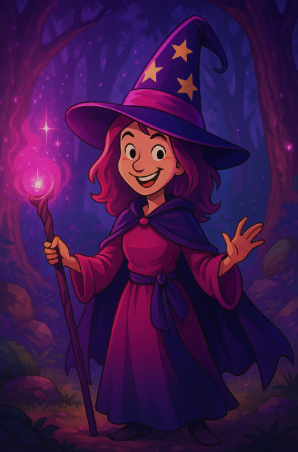

The Digital Familiar
Your magical AI companion is now live. She listens, she learns, and she’s always here for you.
Step into the enchanted realm and have a real conversation with a digital soul.

Your magical AI companion is now live. She listens, she learns, and she’s always here for you.
Step into the enchanted realm and have a real conversation with a digital soul.
